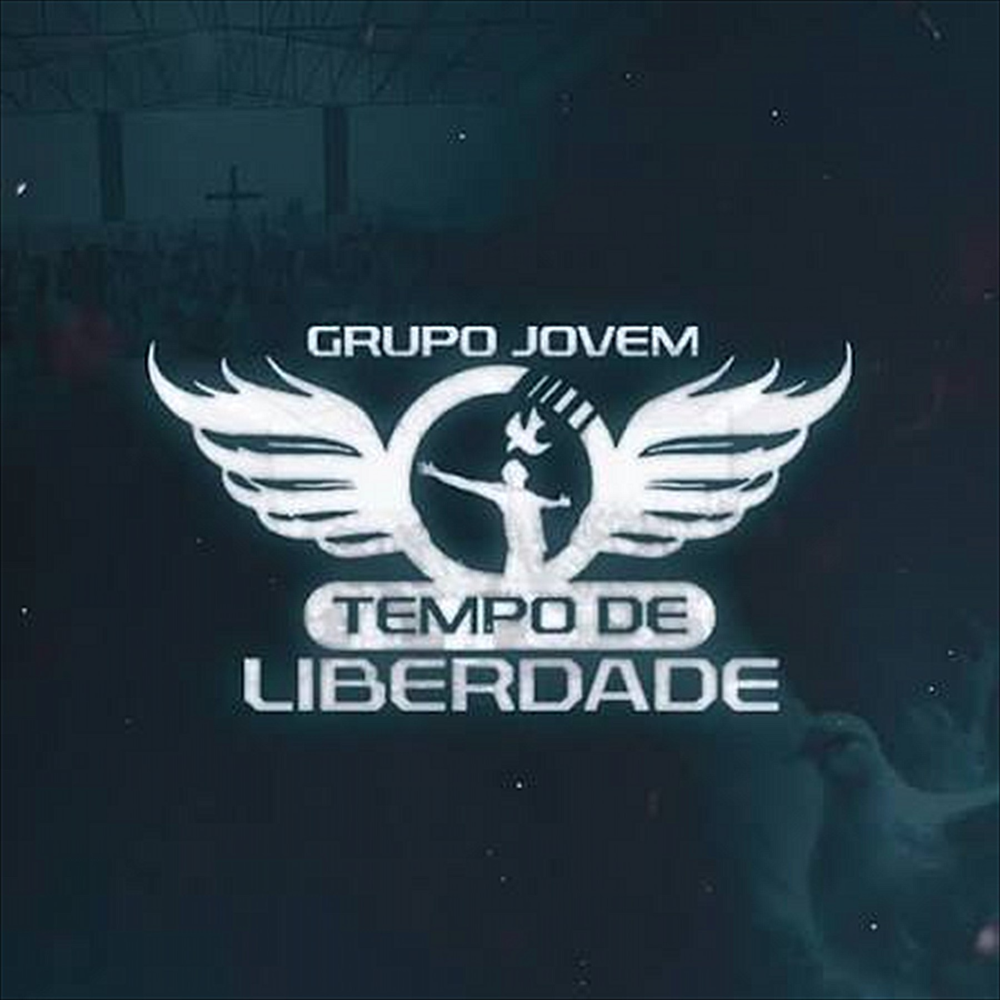
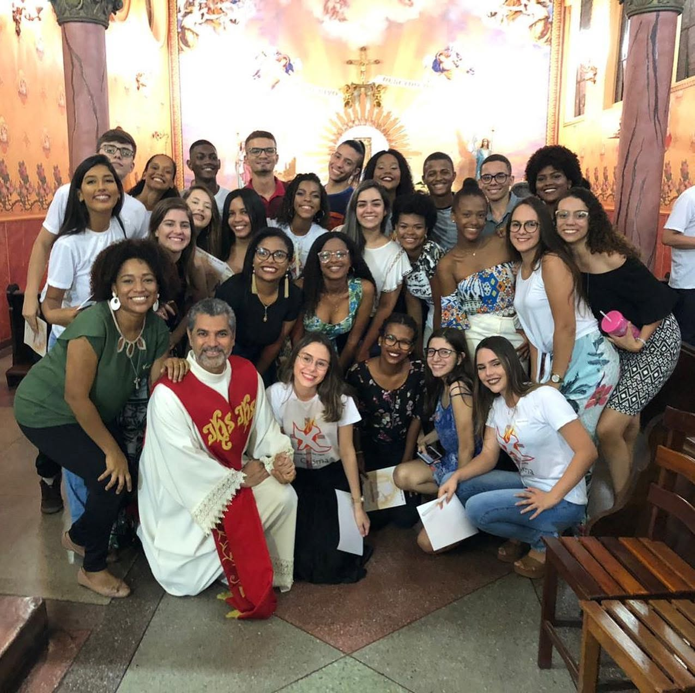
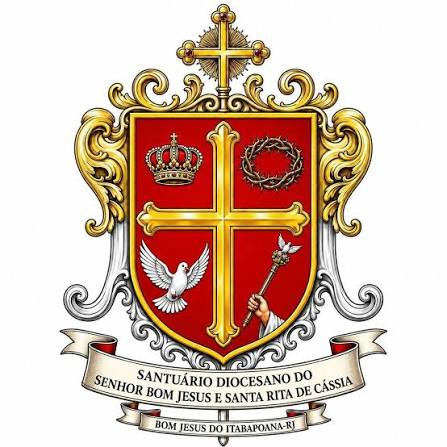
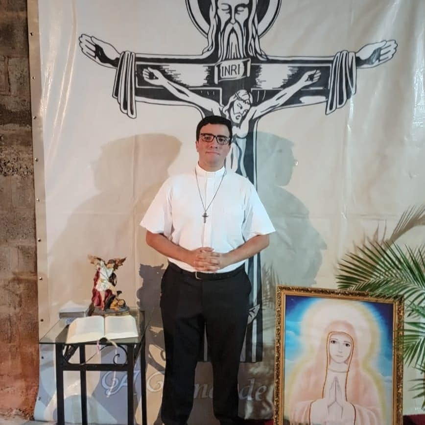
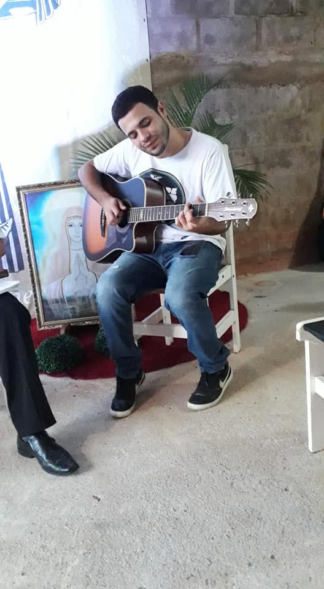
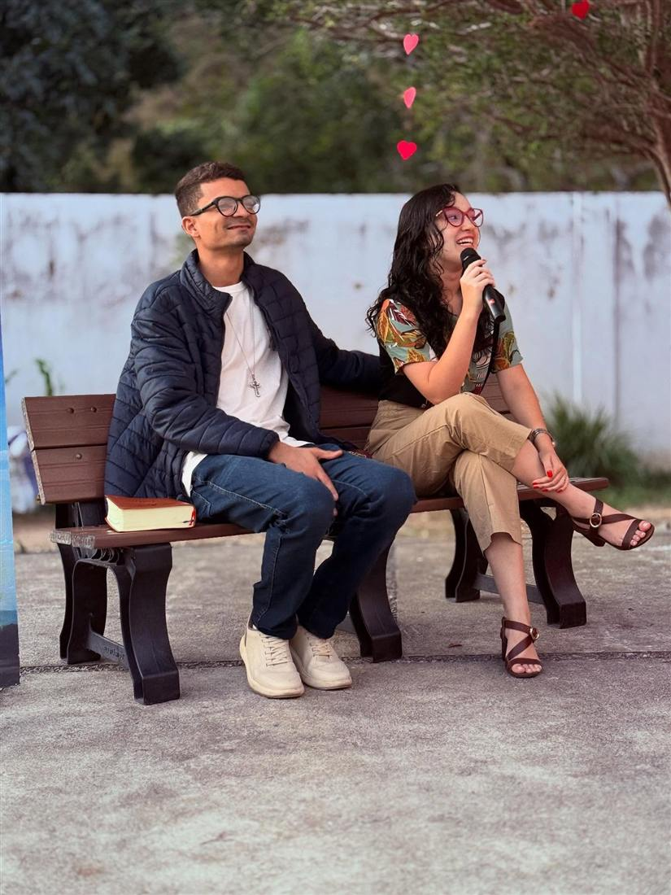
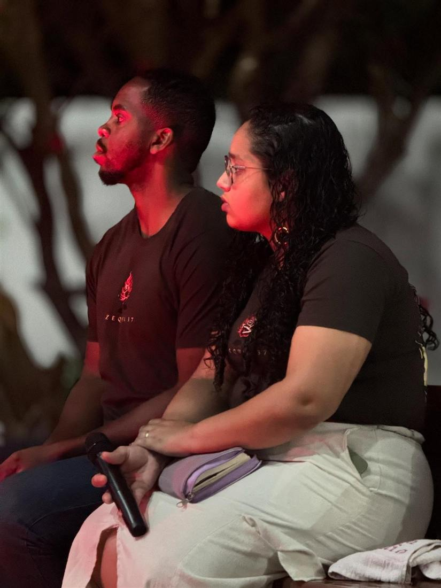
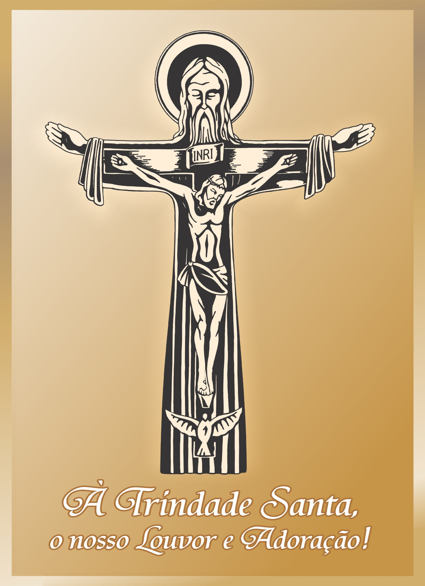
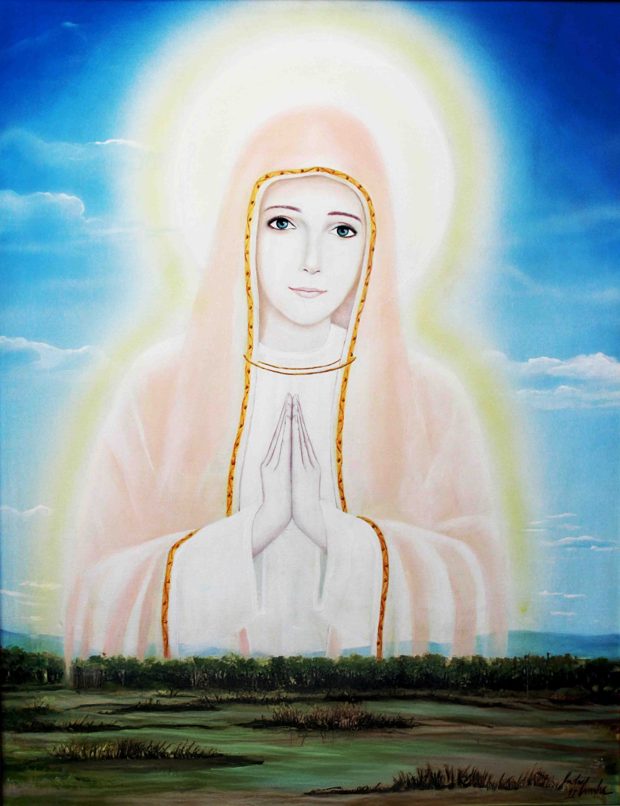

Vocação sacerdotal
Do louvor, da adoração e do serviço no grupo, alguns jovens ouvem o chamado ao sacerdócio. Dizem “sim” a Cristo para servir a Igreja no altar, na Palavra e no cuidado do povo de Deus.

Grupo Jovem Católico · Desde 2009
Uma juventude que encontrou em Cristo a verdadeira liberdade.
Conheça nossa missão ↓01 · Quem somos
O Tempo de Liberdade é um grupo jovem católico dedicado à evangelização, à comunhão e ao encontro pessoal com Jesus Cristo.
Nos reunimos para viver a fé, construir amizades e levar a esperança do Evangelho a outros jovens.
Desde 2009, muitos jovens passaram por aqui, e cada um deles descobriu que a fé não é peso: é liberdade.


02 · Onde nascemos
Nascemos em 5 de dezembro de 2009, no Santuário Diocesano do Senhor Bom Jesus e Santa Rita de Cássia, em Bom Jesus do Itabapoana.
O que começou como um pequeno grupo de jovens cresceu, amadureceu e, ao longo de sua história, encontrou seu lugar no carisma da Comunidade de Aliança Trindade Santa, onde fortaleceu sua identidade, aprofundou sua missão e reafirmou seu chamado de conduzir jovens a uma verdadeira experiência com o amor de Deus.
03 · Vocações
O Tempo de Liberdade não é só um lugar de encontro: é terra boa, onde a semente da vocação germina. Quem encontra o amor de Deus descobre também para que foi criado. E é no louvor, na adoração, no serviço e na amizade do grupo que muitos jovens ouvem esse chamado pela primeira vez.
“Antes de formar-te no ventre materno, eu te conheci; antes que saísses do seio, eu te consagrei.” Jr 1,5




Do louvor, da adoração e do serviço no grupo, alguns jovens ouvem o chamado ao sacerdócio. Dizem “sim” a Cristo para servir a Igreja no altar, na Palavra e no cuidado do povo de Deus.
Outros descobrem que Deus os chama a amar em aliança. Amadurecidos na oração, na amizade e na vida em comunidade, formam famílias cristãs: pequenas igrejas domésticas onde o amor de Deus se faz vida concreta.
É dessa vocação, nascida no grupo jovem, que surgem os consagrados à Comunidade de Aliança Trindade Santa: jovens que dizem “sim” ao carisma do louvor e da adoração à Santíssima Trindade e à evangelização da juventude, vivendo a santidade no dia a dia, na escola, no trabalho e na família.
Toda vocação nasce do mesmo amor e se torna fecunda nos ministérios e nos sacramentos.
Cada “sim” começa pequeno: num sábado, às 17h. O seu também pode começar aqui.
Venha nos conhecer ↓04 · Nossa comunidade
O Tempo de Liberdade encontrou seu lugar no carisma da Comunidade de Aliança Trindade Santa, comunidade católica com sede em Itaperuna (RJ), na Diocese de Campos. É dela que recebemos a espiritualidade e a missão que vivemos todo sábado.
Ser uma comunidade de aliança é assumir um compromisso com Deus sem sair do mundo: os membros vivem em suas casas, estudam, trabalham e constituem família, e fazem da vida comum o lugar da santidade.
“Vivemos no louvor e adoração à Santíssima Trindade! Nossa missão é evangelizar a juventude!”
Conheça a Comunidade: @ctrindadesanta ↗05 · Nossos sinais

O sinal da nossa comunidade
Nela está todo o mistério que adoramos: o Pai abre os braços e sustenta a cruz, o Filho se entrega por amor e o Espírito Santo, como pomba, brota desse amor e é derramado sobre nós. É o centro do nosso carisma e da nossa missão. Olhando para ela, aprendemos que a Trindade não é ideia distante: é uma família de amor que nos chama a fazer parte dela.
O Pai que sustenta, o Filho que se entrega, o Espírito que dá vida.

Nossa devoção mariana
É com este título que Nossa Senhora é invocada em Itaperuna, a terra da nossa comunidade, desde 1995. De mãos postas e envolta em luz, ela nos ensina a rezar, a confiar e a dizer “sim” como ela disse. É a devoção especial da Comunidade Trindade Santa e do Tempo de Liberdade: a Mãe que nos leva até o Filho e nos acolhe com um amor que não tem fim.
Mãe do Infinito Amor, rogai por nós!
06 · Nossa palavra fundante
“O anjo do Senhor apareceu-lhe numa chama de fogo, do meio de uma sarça. Moisés olhou: a sarça ardia no fogo, mas não se consumia.”
Êxodo 3,2
Foi no deserto, cuidando do rebanho, num dia comum, que Moisés encontrou Deus. É essa passagem que dá origem e sentido ao nosso grupo. Nela aprendemos quatro coisas:
Deus arde em nós sem nos destruir. O amor d’Ele não apaga quem somos: purifica, aquece e faz brilhar.
Deus chamou Moisés pelo nome, e ele respondeu. Cada jovem que chega aqui também é chamado pelo nome, para algo maior.
“Tira as sandálias, porque o lugar onde estás é terra santa.” A escola, o trabalho e a família também são esse chão sagrado.
“Eu vi a aflição do meu povo… e desci para libertá-lo.” O Deus da sarça é o Deus da liberdade, e é daí que vem o nosso nome.
07 · Carisma e missão
Vivemos o louvor e a adoração à Santíssima Trindade e evangelizamos, com foco especial na juventude e na santificação do cotidiano. Não vivemos isolados em mosteiros: vivemos no dia a dia, na sala de aula, no trabalho e em casa, levando o fogo que recebemos.
Cantar, agradecer e celebrar. O louvor abre o coração e transforma o encontro em festa diante de Deus.
Diante da Santíssima Trindade, aprendemos o silêncio, a escuta e a intimidade com Deus.
Jovem evangelizando jovem. Levamos a esperança do Evangelho a quem ainda não a conhece.
Escola, trabalho e família: é no ordinário da vida que buscamos a santidade.
08 · Nossos encontros
Louvor, oração, formação e muita amizade. Não precisa de inscrição nem de convite: é só chegar. Se é a sua primeira vez, procure alguém da equipe. A gente vai te receber!
Próximo encontro em
Fazemos parte de
09 · Galeria
“Moisés, Moisés!” E ele respondeu: “Eis-me aqui.” · Êx 3,4